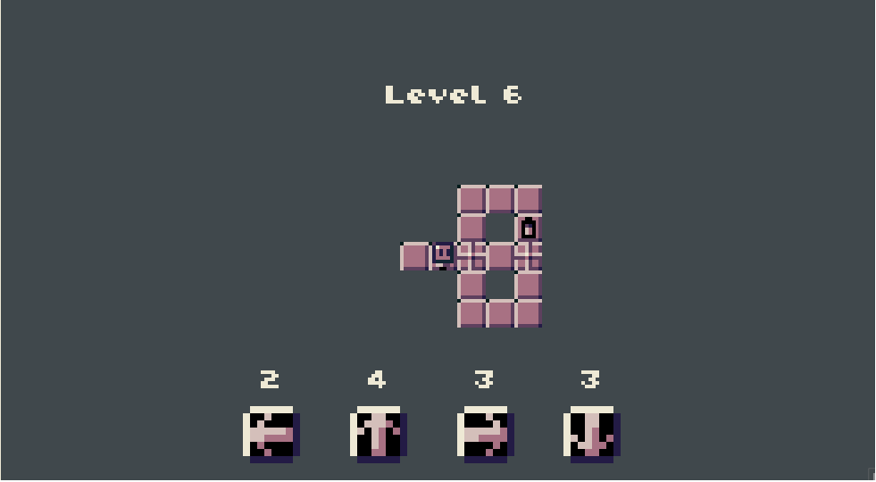
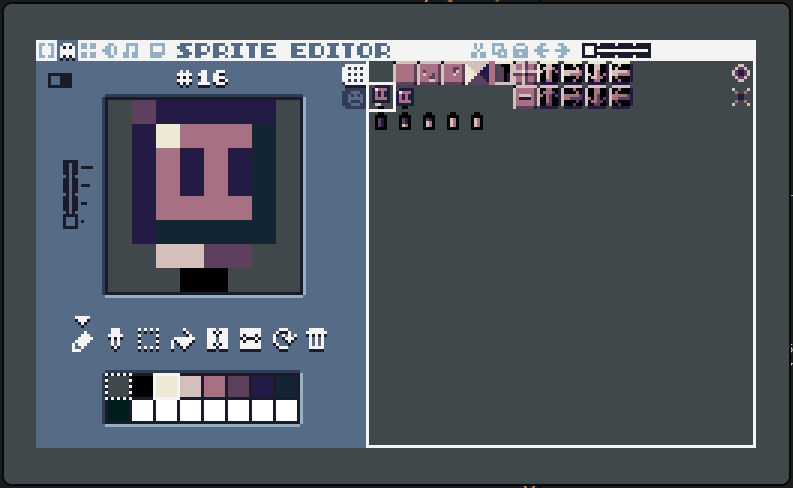

Bit Path - Lisp and game development
You can play Bit Path here.  Learning a lisp has been on my to-do list for too long, so was trying it out for game development. There has been a lot of interesting activity in the gamedev lisp space which I'm very intrigued by. Even Naughty Dog is famously known to have used lisps to make games. So when the first Fennel game jam was announced, I used it as the opportunity I was waiting for, and made a game with a lisp.
Fennel is a lisp that compiles down to Lua. It has zero overhead, can make use of the existing Lua ecosystem, and is super easy to learn due to its small spec and reliance on Lua for everything else. I was able to get started writing it in just a day, since I already knew Lua, even though I never wrote lisps before.
The platform/framework I used to make the game is TIC-80.  This is commonly referred to as a fantasy console, it emulates a retro videogame console that never existed. What I really like about it is the artificial limitations it imposes, such as a 16 color palette and 240x136 display. Creative processes become much easier when there are limitations imposed. Not to mention how approachable it is, everything from writing code to making sprites, maps and sound can all be done from inside the console itself. It has first-class support for multiple languages, including Fennel.
The game mechanic in itself is not novel, I came up with it after a bit of prototyping in PuzzleScript. I just wanted to have a very simple idea so that I could focus more on the implementation.
One of the most talked-about features of lisps are macros, and their unmatched metaprogramming capabilities. Every programmer occasionally has this itch to create their own programming language. And after spending time learning macros, I can confidently say that lisp macros are a great cheap way to scratch that itch. The ability to modify syntax trees during compile-time is, although not exclusive, definitely the easiest and most intuitive out of all programming languages I've used so far.
Here's the first macro I made:
(macro enum! [...]
`(local ,[...] ,(icollect [i (ipairs [...])] i)))
This basically converts this:
(enum! E1 E2 E3)
Into this:
(local [E1 E2 E3] [1 2 3])
Which is just variable assignment. And it's not very flexible! It won't even work inside nested structures, like this one for example:
(let [item { :weight 5
:pos [5 10]
:type (enum! COIN TRAP HEALTH)}] ; won't work
Since local cannot be used to define table properties in Lua,
this does not evaluate correctly.
Side note: If you're not used to reading lisps, all these parantheses and brackets might overwhelm you. An easy trick that works for me is to focus on the indentation. When constructs go down a level they are almost certainly going to be indented. Parinfer is also an incredibly good way to get used to writing lisps by focusing on indentation rather than parentheses, it's what I've been using to write Fennel. Although I hear so much about paredit that I might just bite the bullet and learn Emacs any day now 😉.
So why did I decide to create this macro? Well, I've been playing around with this idea recently, a way to create and run state machines without separating states from transitions and triggers. I'm going to call it a "declarative state machine".
Here's a basic example:
{
RUNNING (fn [])
(if (jump-pressed?)
JUMPING)
JUMPING (fn [])
(if (player-on-ground)
RUNNING)
....
}
State and its behavior are defined together, and if transtion is required, you just return the next state. Normally state machine implementations try to separate out the state behavior from transitions and triggers, this I think, causes unnecessary decoupling. State is much better declared together with its definition, and transitions should simply be a matter of specifying the next state to switch to.
With the enum macro it should be easy to define the state keys that I could use to implement the state machine!
... Or so I thought.
I had originally implemented my state machine like so:
(fn state-machine [states-tbl]
(var current (. states-tbl 1))
(fn [...]
(let [next (current ...)]
(match (type next)
:number (set current (. states-tbl next))
:function (set current next)))
next))
And when using it, I had to have an extra initialization step just for the enums:
(local player-state
(do
(enum! [RUNNING JUMPING])
(state-machine { RUNNING (fn [] ....)
{ JUMPING (fn [] ....) })))
I felt that although this still works, the extra enum initialization can still be avoided.
I went with this approach for the jam (because time was running out)
but during post-jam clarity, I decided to convert the entire state-machine funciton to a macro:
(macro state-machine! [states-tbl initial]
(let [keys# (icollect [k (pairs states-tbl)] k)
nums# (icollect [i (ipairs keys#)] i)]
`(let [,keys# ,nums#
states# ,states-tbl]
(var current# (. states# ,initial))
(fn [...]
(let [next# (current# ...)]
(match (type next#)
:number (set current# (. states# next#))
:function (set current# next#))
next#)))))
This is used essentially the same as the state-machine funciton above,
but it also initializes enum keys in the macro itself,
so now it doesn't need the enum initializaiton step and the usage is simplified to:
(local player-state
(state-machine! { RUNNING (fn [] ....)
{ JUMPING (fn [] ....) }))
And I don't need my enum! macro anymore,
this makes using my state machine much simpler.
My implementation can also handle intermediary states in state machines, a third state that can run when there is a transition happening from one to another. Because of the way state transitions are handled, it's possible to return a function instead of a state, and that funciton, then becomes the current state until it returns the next state itself:
(local car-state
(state-machine! { MOVING (fn []
....
(if (brakes-applied?)
(fn []
(reduce-car-speed)
(if (= car-speed 0)
STOPPED))))
{ STOPPED (fn [] ....) }))
This system has been really helpful in keeping game logic organized, and I can certainly see myself using this a lot more moving forward, it wouldn't have been this easy if I wasn't using fennel.
Anyways, now that I have a grand total of three (3) games under my belt, I think I can finally start calling myself a game developer...